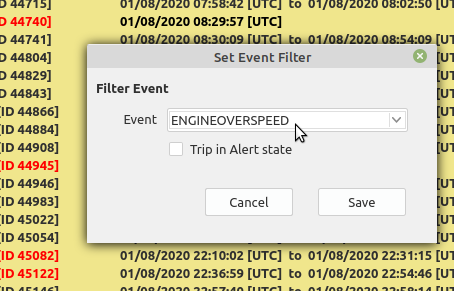
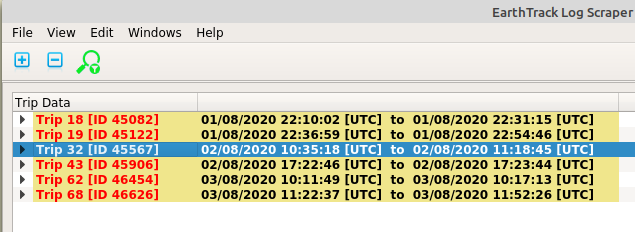
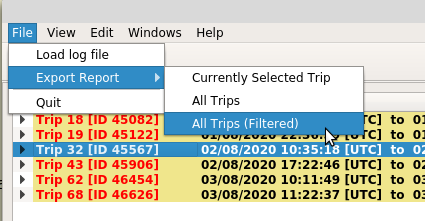

To help searching for trips including particular types of events, event filtering can be used.
A symbol in the toolbar at the top of the application window indicates the status of filtering. A red filter symbol indicates that filtering is not active (as illustrated), while a green filter symbol indicates that a filter has been applied.
Selecting the filter toolbar icon toggles the state of the filter between applied and not applied.
To set or change the event filter settings select the "View / Set Event Filter" menu item.
Selecting the "View / Set Event Filter" menu item will display a modal dialog allowing the filter to be set.
The event filter dialog has two settings, namely the event to include in the filter, and whether or not only trips in alert should be include. Note that trips in alert is only referring to highlighting in the Trip Data pane and not to any specific event condition.
The two filter settings are ANDed together. Note that to only filter on trips in alert, set the event filter to the first "blank " entry.
With the filter applied, i.e. a green filter symbol indicated in the toolbar, only trips matching the filter settings are displayed.
If the currently selected trip is still visible after a filter is applied it will remain the currently sellected trip. If the currently selected trip is not visible after a filter is applied the first visible trip will become the currently selected trip.
With a filter applied all the normal processing occurs and all normal functions are available for the trips displayed in the Trip Data pane.
With a filter applied the option to export only trips matching the filter is available.
Selecting the "File / Export Report / All Trips (filtered)" menu item an export of all trips matching the filter can be exported (refer to Trip Log Export).
